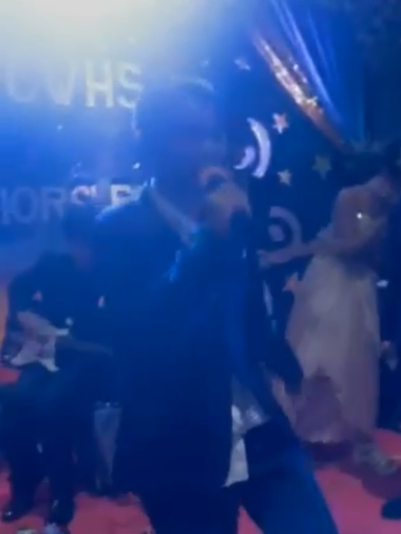

Light Rail Transit Line 1
2024 song by Justin
Light Rail Transit Line 1 is a song recorded by the student, Justin. It was released on February 21, 2024, as the first song composed from the band's first studio album
PH Rail Songsand as a official music video. The song became a viral song on the social media platform Facebook very quick, with many using the ending verse and the line
Baclaran, EDSA, Libertadand
(LRT) mas mabilisas a soundbite on the site by throwing back to viral videos.
Light Rail Transit Line 1 |
|
|---|---|
 |
|
| Single by Justin from the album PH Rail Songs | |
| Released | February 21, 2024 |
| Recorded | 2024 |
| Length | 3:03 |
| Label | Justin • LRT-1 |
| Songwriter(s) | Justin |
| Producer(s) | Justin |
| Music | |
| Audio | Light Rail Transit Line 1on this site |
Light Rail Transit Line 1was initially planned as the album's first song with a release date in December 2022, but it was moved on April 2023 to experience during his train rides.
Its was still not sufficient to engage viewers, and Justin make a
votingin his classroom in February 2024 to make sure to perform in LRT-1 or at school. Result after voting won 27 that was in the school over 23 in the LRT-1. Justin choose the school corridor at the front of his classroom to perform it finally in the release date.
The song speaks about to encourage to ride LRT-1 train, for example,
Gusto mo bang sumakay sa Light Rail Transit Line 1. The music features transitions between a drum and a piano. The song is described as, according to his classmates, students, teachers, and even the LRMC.
A strong example that I fearless leap into a multitude of musical genres, daring to explore folk, jazz and musical theatre all within a single track. This ambitious bridging of styles could lead to disaster, but I have mastered the skill, mirroring not only the sound, but also the lyrical content of each genre: InLight Rail Transit Line 1, for example, they encourage to ride the train because its so fast and cold air conditioners. In conjunction with songs that often speak to very foundational human emotions and fragilities, this may be what is most compelling about my music, and what allows the band's songs to resonate with audiences both young and old.
In a Facebook made by the band himself, production for the song included creating a beat with a background video of school corridor. The band also wanted to try to flawlessly seam a transition, with a theatrical ending to the song where
everything comes at once, with a continuously speeding up verse.
On the same day as its release, a music video was released for
Light Rail Transit Line 1. In the video, Justin performs the song in an school corridor while students are walking free during the break time.
The music video had a spike in views after the song went viral; it is currently the most popular song he composed, with 68k views as of November 2024.
Credits adapted from LRT:
- Justin - instruments, vocals, editor, producer, audio mixing, composer
- Kent Adrian Capila - videographer
Just a week after the song was initially released,
Light Rail Transit Line 1leading to a spike in views on the official music video everywhere. It is currently the most viewed video on his account and the song is become the top 1 of the Philippines' Railway song in 2024.
Junior's Prom Concert

Perfoming the song in the front of atendees.
On April 4, 2024, before the Junior's Prom has ended, hundred of students are requesting to give way Justin to sing the song. He started to sing at 8:58 PM and ended at 9:02 PM.
Many students are excited and happy when the song began due to the popularity in the community.
A week after the song was released, many students of Pasay City West High School are enjoying to listen to this song as this is the most tending song this year, also in the school.
On March 5, 2024, Justin start offering free LRT-1 rides for students for
special dayafter the song went viral.
The Light Rail Manila Corporation already knew the song for being great message that matched about the LRT-1.
Chart performance for
Light Rail Transit Line 1
| Chart (2024) | Peak position |
|---|---|
| Pasay City West High School musical performance | 2 |
| 2024 Philippine's Railway Songs | 1 |
Certifications for "Light Rail Transit Line 1"
| Place | Certification |
|---|---|
| Metro Manila, Philippines | Gold |